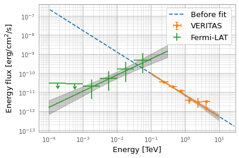

[1]:
%load_ext autoreload
%autoreload 2
[2]:
from vtspy import *
WARNING: version mismatch between CFITSIO header (v4.000999999999999) and linked library (v4.01).
WARNING: version mismatch between CFITSIO header (v4.000999999999999) and linked library (v4.01).
WARNING: version mismatch between CFITSIO header (v4.000999999999999) and linked library (v4.01).
Step 1. Load Fermi-LAT and VERITAS datasets
[3]:
joint = JointAnalysis(fermi="analyzed", veritas="analyzed")
2022-06-14 23:26:39 INFO : Initialize the joint-fit analysis...
2022-06-14 23:26:39 INFO : Initialize the VERITAS analysis.
2022-06-14 23:26:39 INFO : The setup is found [state_file = analyzed]. Read the state.
2022-06-14 23:26:39 INFO : Completed (VERITAS initialization).
2022-06-14 23:26:39 INFO : Initializing the Fermi-LAT analysis...
2022-06-14 23:26:41 INFO : The setup and configuration is found [state_file = analyzed]. Loading the configuration...
2022-06-14 23:26:51 INFO : Loading the Fermi-LAT events...
2022-06-14 23:26:51 INFO : Loading the Fermi-LAT IRFs...
WARNING: FITSFixedWarning: RADECSYS= 'FK5 '
the RADECSYS keyword is deprecated, use RADESYSa. [astropy.wcs.wcs]
2022-06-14 23:26:51 WARNING : FITSFixedWarning: RADECSYS= 'FK5 '
the RADECSYS keyword is deprecated, use RADESYSa.
WARNING: FITSFixedWarning: 'datfix' made the change 'Set DATEREF to '2001-01-01T00:01:04.184' from MJDREF.
Set MJD-OBS to 58849.000000 from DATE-OBS.
Set MJD-END to 58850.000000 from DATE-END'. [astropy.wcs.wcs]
2022-06-14 23:26:51 WARNING : FITSFixedWarning: 'datfix' made the change 'Set DATEREF to '2001-01-01T00:01:04.184' from MJDREF.
Set MJD-OBS to 58849.000000 from DATE-OBS.
Set MJD-END to 58850.000000 from DATE-END'.
2022-06-14 23:26:52 INFO : Loading the Fermi-LAT models...
2022-06-14 23:26:53 INFO : Ready to perform a gammapy analysis.
2022-06-14 23:26:53 INFO : The target, 4FGL J1221.3+3010, is associated with 2 source(s).
2022-06-14 23:26:53 INFO : Completed (Fermi-LAT initialization).
2022-06-14 23:26:53 INFO : Constructing a joint datasets
2022-06-14 23:26:53 INFO : Completed.
Check datasets and models
[4]:
joint.print_datasets()
2022-06-14 23:26:53 INFO : Datasets
--------
Dataset 0:
Type : MapDataset
Name : fermi
Instrument :
Models : ['1ES1218+304', '4FGL J1217.9+3007', '4FGL J1225.9+2951', '4FGL J1221.5+2814', '4FGL J1231.7+2847', '4FGL J1159.5+2914', '4FGL J1230.2+2517', 'isodiff', 'galdiff']
Dataset 1:
Type : SpectrumDatasetOnOff
Name : veritas
Instrument :
Models : ['1ES1218+304']
[5]:
joint.print_models()
[5]:
Table length=5
| model | type | name | value | unit | error | min | max | frozen | is_norm | link |
|---|---|---|---|---|---|---|---|---|---|---|
| str11 | str8 | str9 | float64 | str14 | float64 | float64 | float64 | bool | bool | str1 |
| 1ES1218+304 | spectral | index | 3.1270e+00 | 1.223e-01 | nan | nan | False | False | ||
| 1ES1218+304 | spectral | amplitude | 4.4324e-12 | cm-2 s-1 TeV-1 | 6.802e-13 | nan | nan | False | True | |
| 1ES1218+304 | spectral | reference | 1.0000e+00 | TeV | 0.000e+00 | nan | nan | True | False | |
| 1ES1218+304 | spatial | lon_0 | 1.8534e+02 | deg | 0.000e+00 | nan | nan | True | False | |
| 1ES1218+304 | spatial | lat_0 | 3.0168e+01 | deg | 0.000e+00 | -9.000e+01 | 9.000e+01 | True | False |
Check a global SED before the fit
[6]:
joint.sed_plot()

Change the spectral model
[7]:
joint.change_model("logparabola", refit=True)
joint.sed_plot()
2022-06-14 23:26:55 INFO : The spectral model for the target is chaged:
2022-06-14 23:26:55 INFO : PowerLawSpectralModel->LogParabolaSpectralModel

Step 2. Run a joint-fit analysis
[8]:
joint.fit()
2022-06-14 23:26:56 INFO : Start fitting...
2022-06-14 23:32:29 INFO : Fit successfully.
Check a global SED after the fit
[9]:
joint.sed_plot(show_flux_points=True)

[ ]: